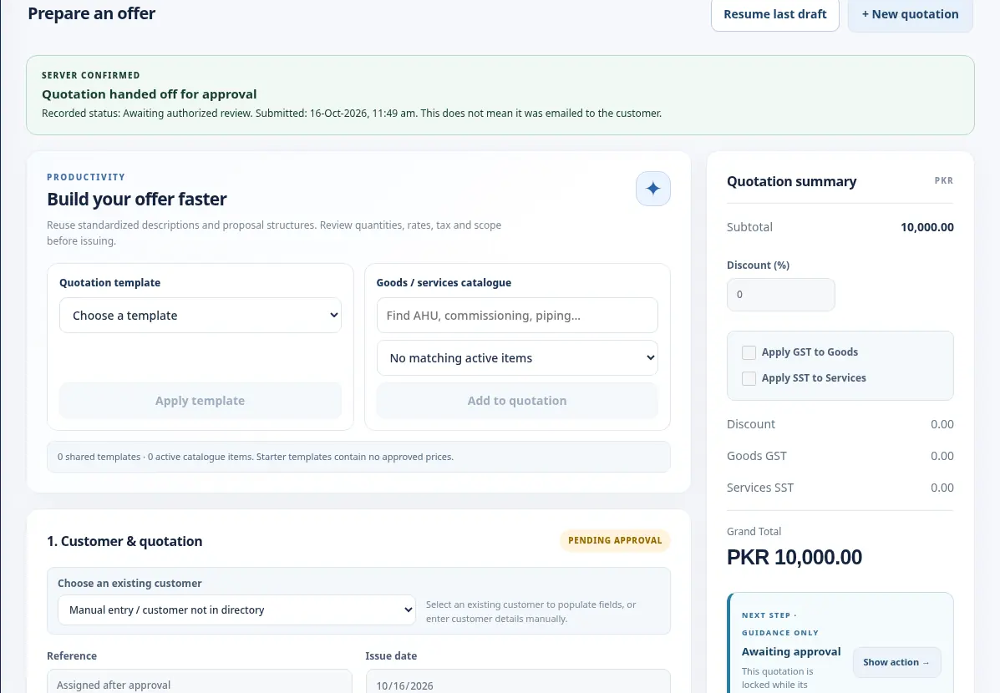
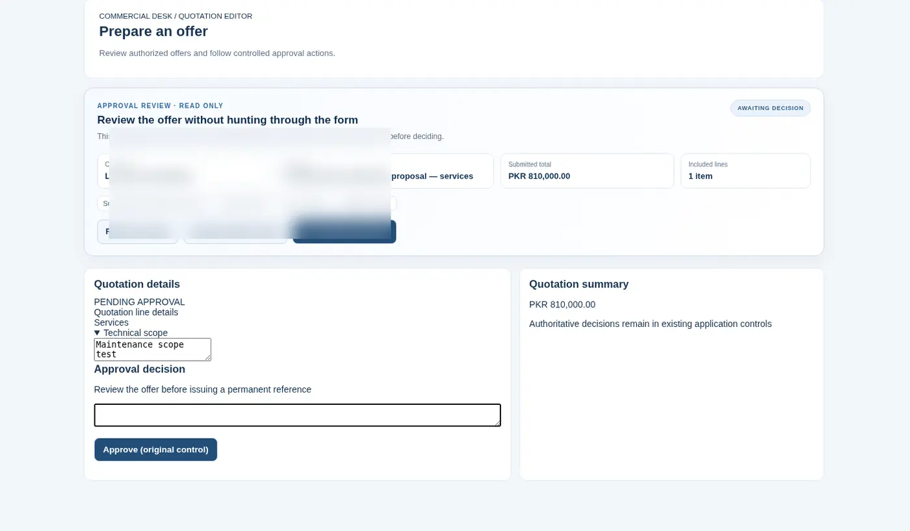

01
No one knows which quotations need attentionSales follow-through
Quotation status, customer outcomes and purchase-order evidence make the pipeline easier to review. Advanced prospect nurturing can be customized.
↗ LeadDesk-style capability
A connected workspace for businesses that quote work, secure purchase orders, issue commercial documents, invoice in stages and close with evidence.
 SANITIZED UI PREVIEW
SANITIZED UI PREVIEWQuotation files, approvals, purchase orders, invoices and delivery acknowledgements often end up in different folders or chats. Each handoff adds uncertainty and creates another place for a job to stall.
QuoteDesk connects the commercial record across the journey, making it easier to prepare, approve, issue, track and close work with clear ownership.
QuoteDesk tackles the administrative gaps between preparing an offer, winning a customer, delivering the work and keeping the commercial record complete.
Quotation status, customer outcomes and purchase-order evidence make the pipeline easier to review. Advanced prospect nurturing can be customized.
Keep quotation revisions, responsible approvals and controlled issue records connected.
Link quotation, order, invoice and receiving records so outstanding commercial actions are easier to identify. Automated collection chasing is an optional integration.
Surface pending quotations, conversion outcomes and lifecycle exceptions through the existing management view.
QuoteDesk already addresses quotation, approval, order and billing visibility. Full CRM automation, automated payment reminders and job-level realized profit are not claimed as standard features; those require specific scope and integration.
See genuine future product ideas ↗Modules are described from the user's perspective. Exact controls, automations, configurations and integrations are defined during a private implementation discussion.
Build detailed goods and service offers with configurable commercial terms, item structures and tax presentation.
Keep document review, changes and responsible approvals in a controlled business process.
Record customer decisions, conversion results and supporting order evidence in one commercial history.
Keep the official issuance of invoices and fulfillment records traceable.
Support agreed commercial milestones, partial quantities and stage-based invoicing.
Organize goods delivery and service completion documentation alongside the underlying transaction.
Connect acknowledgement evidence to the relevant work before the commercial lifecycle is closed.
Surface open work, bottlenecks, outstanding actions and quotation-to-order performance.
Configure responsibilities and visibility for sales, management and supporting personnel.
Selected authentic interface screenshots reveal the design language and user experience. Sensitive records and proprietary implementation details remain outside the public showcase.
Prepare a commercial offer without rebuilding the entire document process.
SELECTED PRODUCT CAPTURETrace the important steps without relying on scattered messages.

SELECTED PRODUCT CAPTUREGive stakeholders a clear view of review and document handling.

SELECTED PRODUCT CAPTUREUsed in real company operations. Implementation and configuration are arranged directly.
Carry relevant information forward rather than drafting the same commercial record repeatedly.
Make important approvals and decisions easier to locate later.
See what is waiting for someone else's action.
Discuss roles, document layouts and workflow adaptation around how your business actually operates.
Our approach begins with how your team actually works. We identify the repetitive administrative steps, define the controls that matter, and discuss an implementation that fits—not a longer software checklist.
QuoteDesk is actively used in business operations. The public pages show selected sanitized interface excerpts, not client records or the complete implementation rules. Company-specific workflows and integrations are demonstrated privately.
Explore a guided product walkthrough or request on-demand configuration. We discuss deeper workflows and implementation details privately.